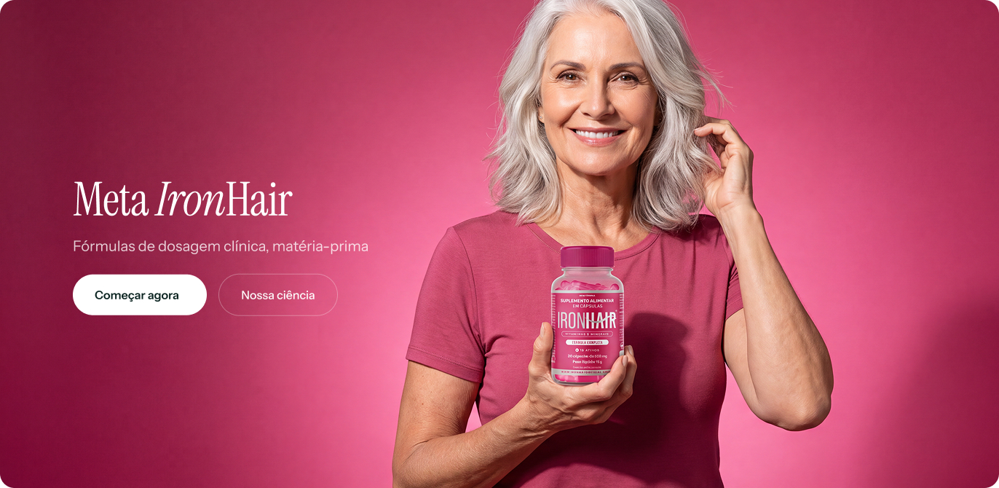
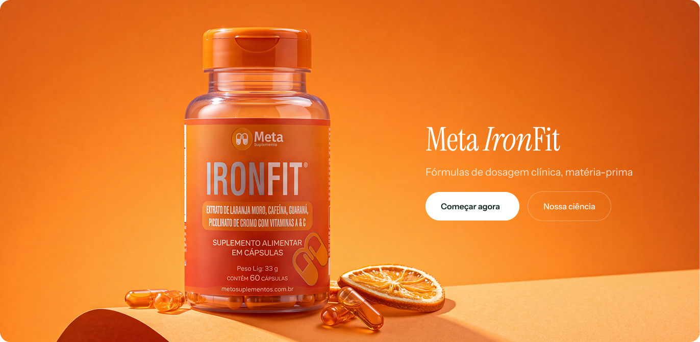
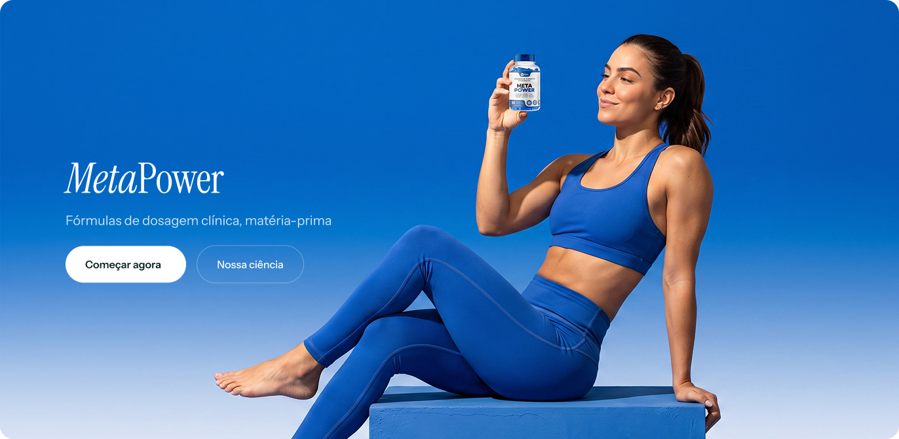
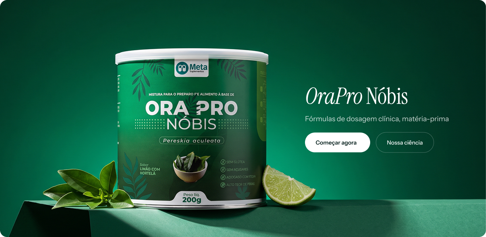
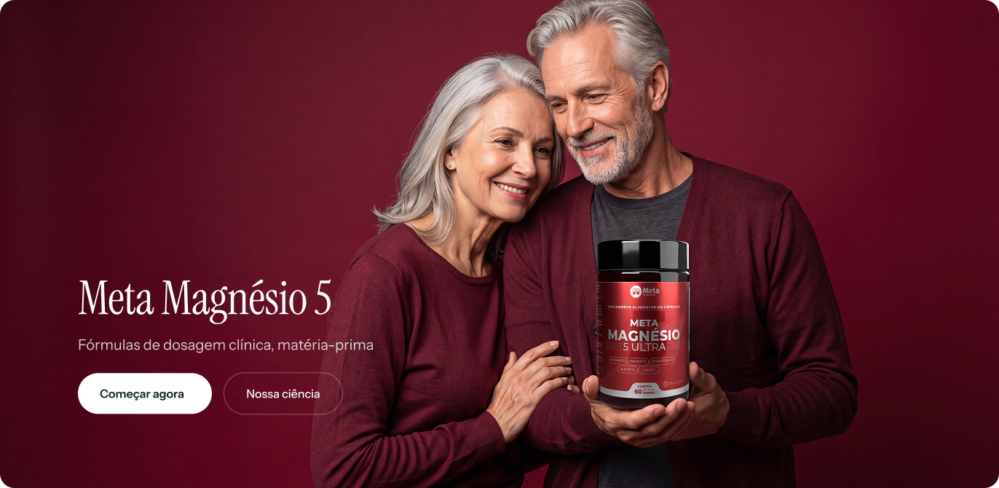

Meta Suplementos
UX/UI + AI Art Direction · E-commerce
A supplement store redesign, from shopping flows to product imagery.
UX/UI redesign of the Meta Suplementos online store, informed by market and persona research. I redesigned every screen, from product discovery and catalogue browsing to product details and cart, with close attention to typography, spacing and component consistency. I also created AI-generated imagery featuring models and products, directing cohesive scenes across the storefront.
Approved copy · Image listI used AI as part of a professional image production workflow to create realistic scenes featuring models and products, directing lighting, colour and composition across the campaign banners.




